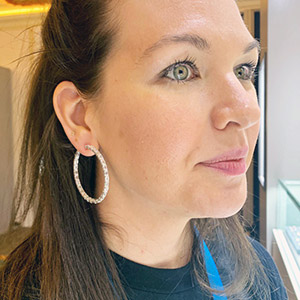

Jewelry & Luxury Trade Journalist
Brittany Siminitz
JCK Contributing Editor
Selected Work
Highlights across outlets, each pulled directly from the source.
Complete JCK Archive
Every piece published under her byline at JCK.
Get in touch
For assignments, pitches, or press inquiries, reach out via LinkedIn or her JCK author page below.